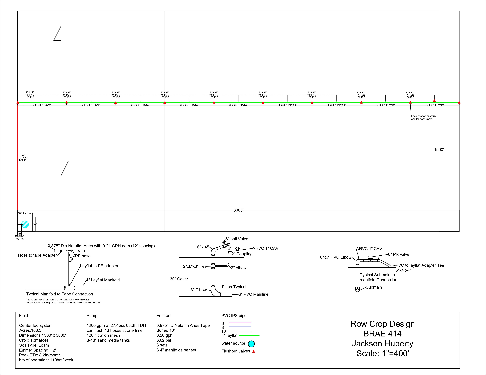
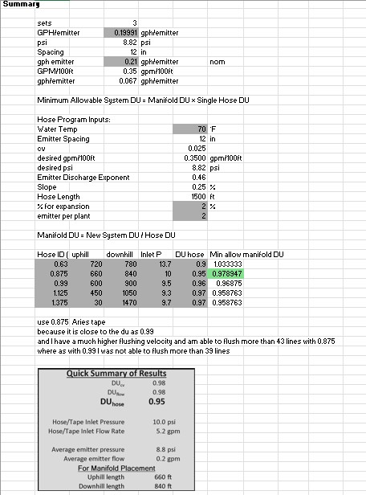

Agricultural Equipment & Field Work

Project Overview
Hands-on agricultural equipment and field operations experience supporting crop production across approximately 8 acres.
My Role
As an Agricultural Operations Technician, I supported production of sweet corn, tomatoes, peppers, pumpkins, and other crops while operating and maintaining tractors, implements, irrigation equipment, and other farm machinery.
Equipment & Field Operations
Equipment included tractors, a lister bar, ripper, drip-tape installation and removal equipment, shredder-blade mower, vacuum planter, and irrigation systems. I supported soil preparation, irrigation, fertilization, harvesting, and general field operations.
Manufacturing & Fabrication
I repaired a large lister bar by widening a slot to accommodate a three-point hitch and reinforcing its supports. The repair was intended to return the equipment to usable condition and reduce downtime, although material availability delayed the work.
Testing & Troubleshooting
I monitored equipment performance and irrigation operation during field work, checking for leaks, improper setup, mechanical wear, and inconsistent operation. I adjusted equipment setup and communicated issues to support timely repairs and reliable field performance.
Final Result
I supported crop-production operations by helping maintain functional equipment and irrigation systems while completing field tasks safely and on schedule.
What I Learned
Developed a stronger understanding of how agricultural equipment, irrigation, soil conditions, and field operations interact in real production environments. This experience strengthened my equipment-operation, maintenance, troubleshooting, safety, and agricultural-engineering skills.
